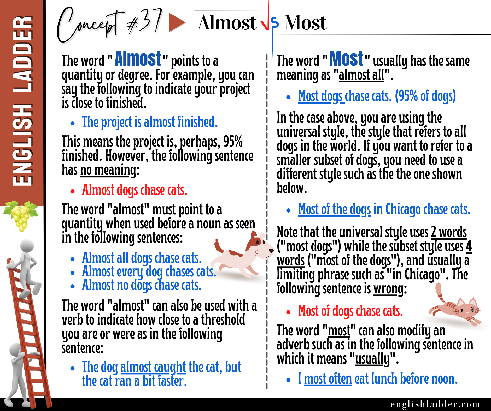

Item 01
The cake is _____ ready.
Reveal answer
See note.
Correct: a) almost Incorrect: b) most – “Most” cannot be used here because the sentence refers to something being nearly complete, which requires “almost”.
Grammar Concepts #37
This rebuilt lesson keeps the original concept image, tightens the structure, and turns the explanation into a clearer self-study guide.

Almost is used to indicate that something is nearly true, but not quite there. It’s often used to describe situations where something is close to happening or being the case.
Almost can also be used with nouns when paired with a quantifier like “all,” “every,” or “no”:
Almost can be used with verbs to express that something nearly happened:
It’s important to use almost correctly to ensure your sentences make sense:
Using almost incorrectly can confuse the listener or reader because it won’t be clear what you are trying to say.
Most is used to indicate the majority, typically referring to the largest part of a group, though not necessarily the whole group.
When referring to a specific subset of a group, most needs to be followed by “of the” or a similar phrase:
Using most without “of the” when referring to a specific group can be confusing or incorrect:
Most can also be used to modify adverbs or adjectives, meaning “usually” or “very”:
By mastering the use of almost and most, you’ll be able to express quantities and degrees more precisely in English.
Answer the quiz questions below with responses consistent with the grammar concepts taught in this article.
The cake is _____ ready.
See note.
Correct: a) almost Incorrect: b) most – “Most” cannot be used here because the sentence refers to something being nearly complete, which requires “almost”.
Most of the dogs in the park _____ friendly.
See note.
Correct: b) are Incorrect: a) is – “Most” refers to a plural subject, so the correct verb form is “are”.
The cat _____ caught the mouse.
See note.
Correct: b) almost Incorrect: a) most – “Most” is used for majority, while “almost” is used for nearly completing an action.
_____ all the seats were taken.
See note.
Correct: b) Almost Incorrect: a) Most – “Most” would be incorrect because it would suggest the majority, not nearly all.
She _____ always arrives late.
See note.
Correct: a) almost Incorrect: b) most – “Most” is not used with “always” as it modifies adjectives and adverbs to mean usually or typically.
_____ people enjoy pizza.
See note.
Correct: a) Most Incorrect: b) Almost – “Almost” would suggest nearly everyone but doesn’t accurately describe a general majority.
I _____ forgot my keys.
See note.
Correct: b) almost Incorrect: a) most – “Almost” is used to express being close to forgetting something.
He _____ likely to succeed in his class.
See note.
Correct: a) most Incorrect: b) almost – “Most likely” is a fixed expression meaning highly likely.
_____ every student in the class passed the exam.
See note.
Correct: b) Almost Incorrect: a) Most – “Almost every” means nearly every, indicating just shy of everyone.
_____ of the water in the lake is clear.
See note.
Correct: a) Most Incorrect: b) Almost – “Most of” specifies a majority of something, fitting the context better.
They _____ missed their flight.
See note.
Correct: b) almost Incorrect: a) most – “Almost” is appropriate for expressing a near-miss situation.
_____ children like playing outside.
See note.
Correct: b) Most Incorrect: a) Almost – “Most” refers to the majority, which is the intended meaning here.
The dog _____ caught the cat.
See note.
Correct: b) almost Incorrect: a) most – “Almost” expresses that the action was nearly completed.
_____ often eat lunch before noon.
See note.
Correct: b) I most Incorrect: a) I almost – “Most often” is the correct expression for usually or typically.
_____ of the books on the shelf are fiction.
See note.
Correct: a) Most Incorrect: b) Almost – “Most of” is used to refer to a large portion of a specific group.
She _____ never goes to bed before midnight.
See note.
Correct: a) almost Incorrect: b) most – “Almost never” means very rarely.
_____ of the students passed the exam.
See note.
Correct: b) Most Incorrect: a) Almost – “Most” is used to describe the majority who passed.
I _____ dropped my phone.
See note.
Correct: b) almost Incorrect: a) most – “Almost” is used to indicate a near miss or near action.
_____ of the guests have arrived.
See note.
Correct: a) Most Incorrect: b) Almost – “Most of” is correct when describing a large part of a group that has arrived.
_____ all dogs chase cats.
See note.
Correct: b) Almost Incorrect: a) Most – “Almost all” means nearly all, which is different from “most”.
The movie was _____ over when the power went out.
See note.
Correct: b) almost Incorrect: a) most – “Almost” is used for describing something nearly complete.
_____ of the cookies were eaten by the time I arrived.
See note.
Correct: b) Most Incorrect: a) Almost – “Most of” is the correct way to describe a large portion of the cookies being eaten.
He _____ made it to the top of the mountain.
See note.
Correct: a) almost Incorrect: b) most – “Almost” is used to describe something that was nearly achieved.
_____ of the chairs in the room are blue.
See note.
Correct: a) Most Incorrect: b) Almost – “Most of” describes a majority of chairs, which is correct in this context.